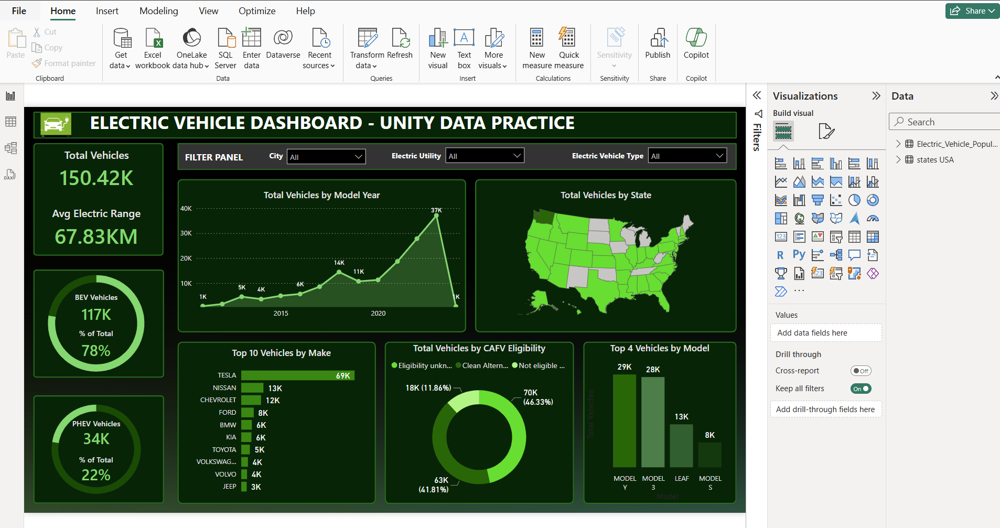
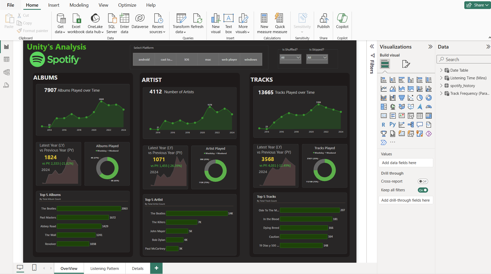
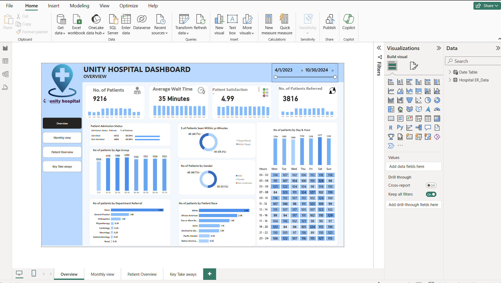

Dashboard Purpose: To present data-driven insights into electric vehicle adoption, trends, and distributions.
Tools Used: Power BI for interactive data visualization.
In this project, "Electric Vehicle Dashboard - Unity Data
Practice", using a data set of EV vehicles population across the United States, we build a dashboard that provides
a comprehensive summary of electric vehicle (EV) utilization across the United States, focusing on vehicle distribution, types,
and performance metrics.

Purpose: To explore and analyze Spotify listening data across Albums, Artists, and Tracks over a 10-year span.
Tools Used: Power BI for dynamic, interactive data visualization.
This dashboard delivers a well-structured and insightful breakdown of Spotify listening history by albums,
artists, and tracks. It includes comparative yearly analyses, top lists, playback behavior filters,
and time-based trends. Page 2 offers granular insights into user listening behavior, both in terms of temporal
patterns (when music is played) and engagement trends (how long and how often tracks are played). The dual-view
of time-based heatmap and frequency-based scatter plot provides a powerful way to understand listening habits,
making it ideal for personalization strategies or music recommendation models.

